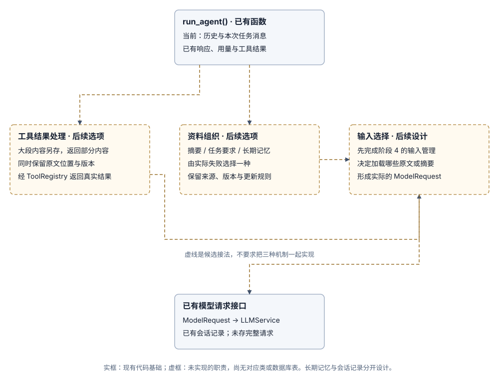

阶段 5：中断后怎样安全继续
只有需要在原进程退出后继续任务时，才增加恢复机制。
1. 区分事实
checkpoint（检查点）保存暂停时的状态，工具结果记录实际执行情况；超时或连接断开不能证明外部动作没有发生。
2. 先做只读恢复
2.1 当前函数与恢复职责的关系
当前没有会话存储或恢复入口。run_agent() 只维护单次任务的内存消息，异常直接传出。先明确 3A 的持久记录契约，再设计未结束任务的识别、外部效果核对与恢复。

2.2 后续只读恢复应怎样推进
- 由单独的恢复入口读取指定 Run 的暂停状态和动作记录；不把继续对话的入口当成恢复命令，也不简单把
running改成completed。 - 恢复协调职责确定下一步动作是否尚未派发、已经完成，或结果未知。已完成的结果复用；无法确认的操作先核对外部事实。
- 确需重新读取文件时，按当前配置重新判断权限，再经
ToolRegistry执行；文件可能已变化，应把新读取记录为新观察。 - 保存新结果与恢复进度后再继续模型循环。后续要恢复写入、付款等动作，还需固定逻辑动作 ID、每次尝试记录和操作结果核对协议。
2.3 现有五张表为何不等于检查点
当前没有恢复指针、租约、派发状态或外部结果确认记录。3A 的拟选格式只覆盖会话、任务边界与完整消息；即使以后保存了工具回执，也仍需另行设计安全恢复。
本阶段尚无检查点表和动作尝试表。选定恢复方案后，再定义检查点关联哪个 Run、逻辑动作怎样关联多次尝试、如何记录派发与确认结果，以及哪些记录必须一起提交。先把这些含义与事务讲清，再给出实际表结构；不能仅从现有 events 重放并重新执行工具。
2.4 恢复练习的范围
保存固定的运行 ID 和动作 ID，从已确认的执行步骤重新构建状态。对有副作用的动作，先核对结果，再决定重试。
3. 注入故障
分别在动作尚未发出、动作已发出但未收到结果、已收到结果但未保存、结果已保存之后中断程序。检查动作是否实际生效，以及程序怎样决定恢复。
4. 验收
区分尚未发出、已完成、仍在运行和结果未知的操作；不能无条件重试结果未知的操作。需要执行不可信代码时，再增加 Worker 或隔离环境。